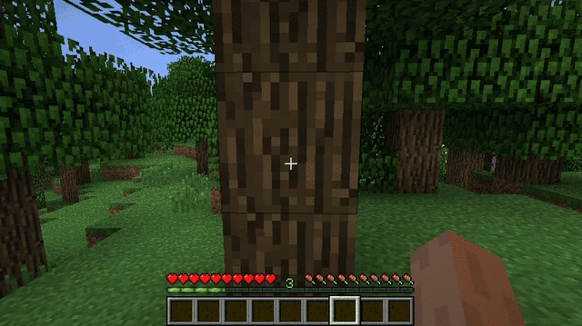
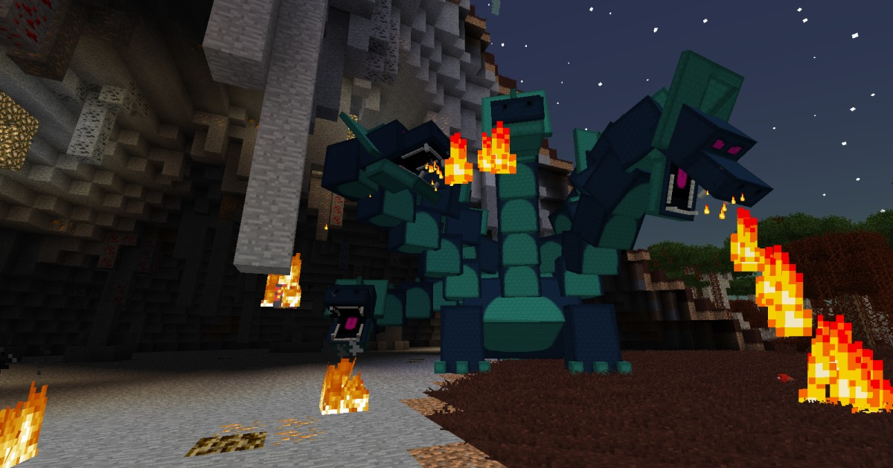
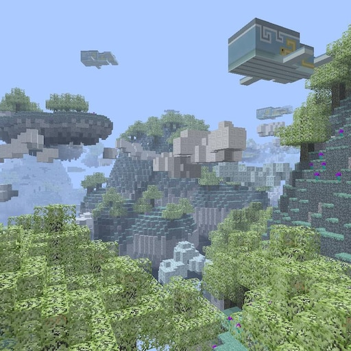
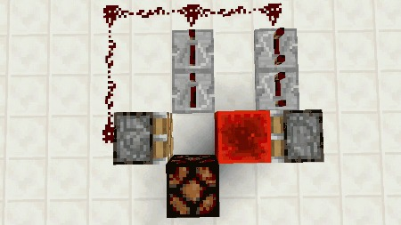

Possibilidades dentro do Game
Minecraft é um game de aventura que usa elementos de construção em sua jornada,
de forma que usuários podem erguer grandes bases para se proteger ou apenas por diversão.
É possível criar utilizando os blocos certos e um pouco de paciência.

Mods
Outra coisa também que fez com que Minecraft se popularizasse, foi a implementação
dos mods. Modificações que alteram a jogabilidade e criou-se uma enorme comunidade
só voltada para isso, alguns dos mais populares inclui o Aether e Twilight Forest


Redstone
Entretanto, uma das funções mais da versão original que foi responsável por
muitas criações dentro do jogo e o permitiu expandir, a redstone. Dentro do jogo
esse item é um minério que pode ser colocado no chão e simula circuitos elétricos
com magia, pode ser responsável por criar muitas automações e sistemas para sua
criatividade.
